Android display frames execute as distributed producer–consumer chains across application and system processes (Input → UIThread → RenderThread → Binder → SurfaceFlinger → hwcomposer), separated by inter-frame VSYNC sleeps and synchronous handoffs. Stock Linux schedulers (EEVDF and EEVDF w/ ProxyExec) and general-purpose sched_ext policies (scx_p2dq, scx_lavd) evaluate each task wakeup independently. Because downstream frame helpers execute only briefly per frame and communicate across user-space futex and Binder waitqueues rather than in-kernel mutex chains, per-task schedulers lose the shared frame deadline and frequently place critical pipeline stages onto low-capacity LITTLE cores or behind compute-bound background workers.
We introduce scx_fcp, a loadable Linux sched_ext scheduler built around bounded frame-context token propagation. Working entirely within eBPF without kernel or framework patches, scx_fcp infers frame entry roots (d = 0) from quasi-periodic VSYNC wakeup behavior under a directed-acyclic-graph (DAG) source invariant, mints an epoch-stamped token bounded to the frame budget, and propagates that token across synchronous (SCX_WAKE_SYNC) and sequential same-thread-group handoffs (d ≤ 5). To prevent priority inflation under parallel thread-pool fan-out, scx_fcp enforces a per-burst sequential handoff cap (nwoke ≤ 1), cross-epoch token renewal, and service-budget revocation, dispatching active token holders through a slack-ordered critical queue onto high-capacity cores. Across 4–32 vCPU asymmetric (446 : 1024) and symmetric (1024 : 1024) Android Cuttlefish instances and a physical 8-core tri-cluster Qualcomm Snapdragon SA8155P SoC (444 : 902 : 1024, Android 14, Linux 6.1.145), scx_fcp sustains 97.1%–99.9% high-capacity stage residency, reduces aggregate AOSP JankBench mean frame latency by 44.3% on Cuttlefish (4.23 ms vs. 7.59 ms) and 75.8% on physical SA8155P hardware (3.56 ms vs. 14.73 ms under EEVDF, and 0.09% vs. 56.59% frames ≥ 12 ms), and cuts UiBenchJankTests weighted p99 latency by 48.3%–52.5% on SA8155P while reducing eBPF CPU time by 27.8%–47.4% compared to scx_lavd.
We propose scx_fcp, a frame-critical-path scheduler that bridges the semantic gap between cross-process UI rendering pipelines and per-task kernel dispatch. As illustrated in the architecture diagram below, scx_fcp executes all admission, inheritance, and placement decisions inside a single wakeup callback (ops.select_cpu) and three stratified dispatch queues:
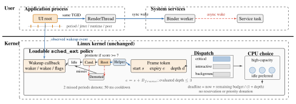
We evaluate scx_fcp against four baselines—stock EEVDF, EEVDF w/ ProxyExec (CONFIG_SCHED_PROXY_EXEC=y on Linux 6.12.74-android16), scx_p2dq, and scx_lavd—across the full 8-benchmark AOSP JankBench suite, the 6-benchmark AOSP UiBenchJankTests suite, 4/8/16/32-vCPU pipeline scaling sweeps (Linux 7.2.0-rc9-mainline), and a physical 8-core tri-cluster ARM64 SoC (Linux 6.1.145).
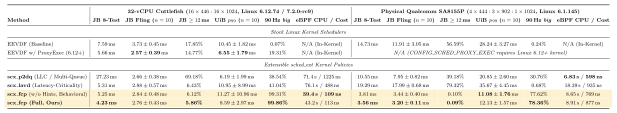
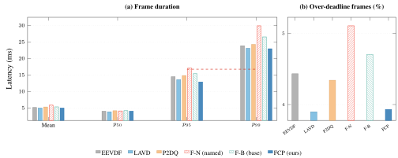
Aggregate AOSP JankBench frame duration (Mean, p50, p95, p99) and percentage of frames exceeding 12.0 ms across all 8 benchmarks (9,586 frames per policy) on 32-vCPU asymmetric (446 : 1024) Cuttlefish.
Component Ablation & Role of Thread-Name Seeding. To verify that performance gains stem from bounded causal token propagation rather than static thread naming, the ablation below isolates each mechanism of scx_fcp. Keeping thread-name hints enabled while disabling token propagation (Hints Only (w/o Tok.)) degrades p99 latency to 33.903 ms (5.5× worse than full scx_fcp), because unnamed downstream Binder and composite helpers stall behind background workers. Conversely, compiling out all string hints (Behavioral (w/o Hints)) still discovers frame roots purely from wakeup periodicity and outperforms stock EEVDF.
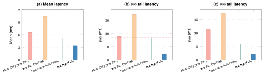
Component ablation of scx_fcp across Mean, p95, and p99 latency: (1) Hints Only (w/o Token), (2) w/o Fan-Out Cap, (3) Behavioral (w/o Hints), and (4) scx_fcp (Full).
In-Kernel Proxy Execution vs. Bounded Wakeup-Token Propagation. Linux Proxy Execution resolves priority inversion only when a task blocks on an in-kernel sleeping lock (struct mutex / rt_mutex), such as buffer fences inside Swap Buffers. However, upstream UI pipeline stages hand off work across waitqueues (futex, epoll, Binder) with no shared kernel mutex. Moreover, under heavy contention, walking blocked mutex chains boosts background lock holders onto big cores, causing false-boosting tail regressions on waitqueue-bound workloads (List View Fling and High-Hitrate Text). scx_fcp propagates bounded tokens across waitqueue wakeup edges while capping fan-out, cutting pre-swap Wakeup-DAG latency by 38.4% and reducing the 90 Hz LITTLE-core trap rate from 80.69% to 0.14%.
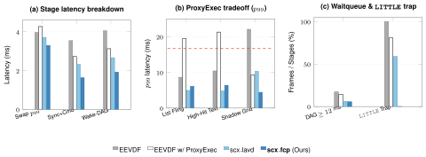
Comparison of EEVDF w/ ProxyExec and scx_fcp across (a) kernel-lock vs. waitqueue-DAG stages, (b) false-boosting p99 regressions on waitqueue-bound workloads, and (c) waitqueue stall rate (≥ 12 ms) and 90 Hz LITTLE-core trap rate.
1. Multi-Core Scaling (4 / 8 / 16 / 32 vCPUs) & Topology Comparison. Across 400 scaling trials (10 runs per cell) on the 90 Hz 4-stage rendering pipeline and across both asymmetric (446 : 1024) and symmetric (1024 : 1024) JankBench topologies, scx_fcp consistently maintains 98.8%–100% high-capacity core residency and sub-budget p99 tail latency.
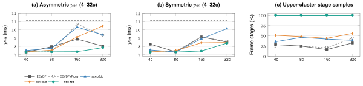
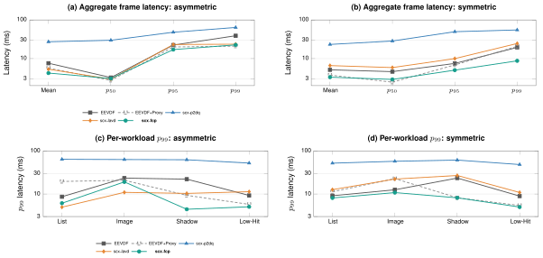
2. Stage-Level FrameMetrics & AOSP UiBenchJankTests. Stage-level p95 decomposition across Unknown Delay, Animation, Draw, Command Issue, and Swap Buffers confirms that scx_fcp eliminates both waitqueue dispatch delays and render-thread stalls across asymmetric and symmetric topologies, achieving the lowest weighted p99 latency on UiBenchJankTests (9.33 ms asymmetric, 9.12 ms symmetric).
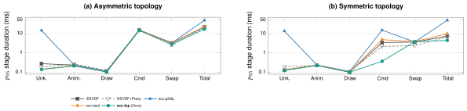
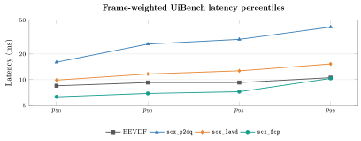
3. Full Physical Qualcomm SA8155P SoC Evaluation & In-Kernel eBPF Overhead. We deploy the identical benchmark suite on a physical 8-core tri-cluster Qualcomm Snapdragon Automotive SA8155P SoC (4× Kryo 485 Silver at 444 capacity + 3× Gold at 902 + 1× Prime at 1024, Android 14, Linux 6.1.145). Across 10 repetitions (n = 10 runs per policy, 259,201 total frames) of AOSP JankBench on SA8155P, scx_fcp reduces Fling mean frame latency by 73.1% over EEVDF (3.203 ± 0.105 ms vs. 11.913 ± 3.052 ms; 3.561 ms vs. 14.732 ms across all 8 workloads), 59.7% over scx_p2dq (7.947 ± 0.819 ms), and 82.2% over scx_lavd (17.985 ± 0.682 ms), cutting jank from 6.71% ± 4.16% (EEVDF) down to 0.03% ± 0.01% (a 209× reduction). Across 10 repetitions (n = 10 runs per policy, 129,321 total frames) of AOSP UiBenchJankTests on SA8155P, scx_fcp and scx_fcp (w/o Hints) reduce weighted p99 latency from 28.24 ± 3.27 ms (EEVDF) and 35.67 ± 4.45 ms (scx_lavd) down to 12.13 ± 1.57 ms and 11.08 ± 1.76 ms (0.03%–0.05% jank), while eliminating the EAS PELT decay trap (77.5%–79.5% Gold+Prime stage residency across 150 60/90/120 Hz pipeline runs vs. 0.19%–1.07% under EEVDF).
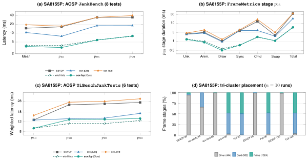
4. Complete Side-by-Side Quantitative Tables (32-vCPU Cuttlefish & Physical SA8155P, n = 10 Runs + eBPF Overhead). The tables below report all 10-repetition (n = 10) statistics (Mean ± SD, p50, p95, p99 ± SD, Jank %), all 8 JankBench workloads, FrameMetrics stage-level p95, all 6 UiBenchJankTests workloads, 60/90/120 Hz pipeline cluster residency, and in-kernel eBPF overhead (total CPU seconds and nanoseconds per callback) across both platforms:
| Platform & Suite | Metric / Workload | EEVDF | EEVDF w/ ProxyExec | scx_p2dq | scx_lavd | scx_fcp (w/o Hints) | scx_fcp (Full, Ours) |
|---|---|---|---|---|---|---|---|
| 32-vCPU Cuttlefish (Asymmetric 446:1024, Linux 6.12.74 / 7.2.0-rc9) |
JankBench 10-Run Fling (n=10): Mean±SD / p95 / p99 / Jank | 3.73±0.45 / 4.13 / 21.95 / 0.76% | 2.57±0.39 / 3.79 / 9.98 / 0.39% | 2.66±0.38 / 5.29 / 10.71 / 0.42% | 2.88±0.57 / 6.08 / 9.70 / 0.48% | 2.84±0.48 / 8.60 / 14.22 / 0.50% | 2.76±0.43 / 5.25 / 13.23 / 0.48% |
| JankBench All 8 Tests: Mean / p95 / p99 / ≥12 ms / Jank | 7.59 / 22.41 / 39.03 / 17.85% / 4.67% | 5.66 / 19.99 / 21.06 / 14.77% / 0.47% | 27.23 / 48.14 / 63.94 / 69.18% / 45.23% | 5.31 / 23.15 / 23.59 / 6.43% / 0.29% | 5.25 / 16.50 / 24.12 / 6.12% / 0.61% | 4.23 / 17.11 / 22.65 / 5.86% / 0.40% | |
| JankBench eBPF Overhead: Total CPU (s) / Callback Cost (ns/call) | N/A (In-Kernel) | N/A (In-Kernel) | 71.40 s / 1,225.1 ns/call | 76.12 s / 487.6 ns/call | 39.42 s / 108.9 ns/call | 43.18 s / 113.4 ns/call | |
| UiBenchJankTests (n=10): p50 / p95 / p99±SD / Jank | 6.79 / 8.90 / 10.45±1.82 / 0.13% | 5.00 / 5.20 / 6.55±1.79 / 0.12% | 5.00 / 5.00 / 6.19±1.99 / 0.08% | 5.00 / 7.15 / 10.95±8.99 / 0.49% | 5.67 / 7.84 / 11.27±10.96 / 0.38% | 5.00 / 6.60 / 8.59±2.97 / 0.18% | |
| UiBenchJankTests eBPF Overhead: Total CPU (s) / Callback Cost (ns/call) | N/A (In-Kernel) | N/A (In-Kernel) | 24.14 s / 1,149.7 ns/call | 24.82 s / 500.1 ns/call | 10.32 s / 104.2 ns/call | 13.06 s / 112.3 ns/call | |
| Physical SA8155P SoC (4×444 : 3×902 : 1×1024, Android 14, Linux 6.1.145) |
JankBench 10-Run Fling (n=10): Mean±SD / p95 / p99 / Jank | 11.91±3.05 / 28.34 / 33.35 / 6.71% | N/A (Linux 6.12+ feature) | 7.95±0.82 / 17.11 / 23.86 / 1.29% | 17.99±0.68 / 33.81 / 41.55 / 20.58% | 3.44±0.40 / 4.89 / 10.34 / 0.44% | 3.20±0.11 / 4.44 / 7.63 / 0.03% |
| JankBench All 8 Tests: Mean / p95 / p99 / ≥12 ms / Jank | 14.73 / 34.29 / 34.63 / 56.59% / 12.97% | 10.55 / 17.96 / 18.08 / 39.18% / 0.17% | 19.29 / 34.64 / 39.46 / 79.32% / 22.59% | 3.81 / 5.85 / 7.90 / 0.10% / 0.03% | 3.56 / 5.86 / 8.07 / 0.09% / 0.03% | ||
| JankBench eBPF Overhead: Total CPU (s) / Callback Cost (ns/call) | N/A (In-Kernel) | 6.83 s / 598.2 ns/call | 18.39 s / 935.4 ns/call | 8.65 s / 768.8 ns/call | 8.91 s / 876.8 ns/call | ||
| UiBenchJankTests (n=10): p50 / p95 / p99±SD / Jank | 14.39 / 25.24 / 28.24±3.27 / 1.06% | 12.55 / 18.02 / 20.85±2.60 / 0.54% | 17.69 / 28.53 / 35.67±4.45 / 1.84% | 5.25 / 9.15 / 11.08±1.76 / 0.03% | 5.30 / 10.66 / 12.13±1.57 / 0.05% | ||
| UiBenchJankTests eBPF Overhead: Total CPU (s) / Callback Cost (ns/call) | N/A (In-Kernel) | 4.81 s / 594.3 ns/call | 8.27 s / 904.6 ns/call | 5.97 s / 854.6 ns/call | 6.07 s / 784.5 ns/call | ||
| 60 / 90 / 120 Hz Pipeline (n=10): High-Capacity (Gold+Prime) Residency | 0.19% / 0.24% / 1.07% | 30.11% / 30.76% / 17.83% | 0.57% / 0.68% / 1.33% | 73.51% / 77.62% / 73.64% | 77.50% / 78.36% / 79.54% |
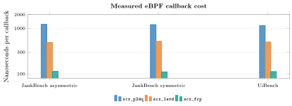
@article{huynhpham2026scxfcp,
title = {scx\_fcp: Bounded Frame-Context Token Propagation for Heterogeneous Android UI Pipelines in sched\_ext},
author = {Huynh-Pham, Nhat-Trieu},
year = {2026},
note = {Linux sched\_ext / Android Systems Research}
}